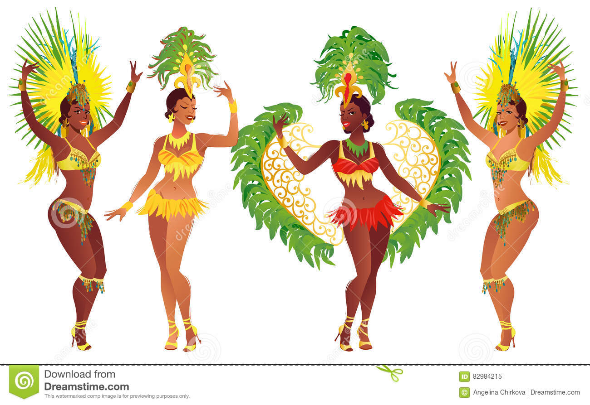

Danza y género musical originario de Brasil, que tiene sus raíces en África. La historia indica que la samba fue desarrollada en Río de Janeiro a mediados del siglo XIX por esclavos que obtuvieron su libertad.
Cortola
Regresar a menú